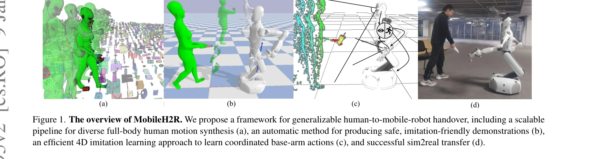
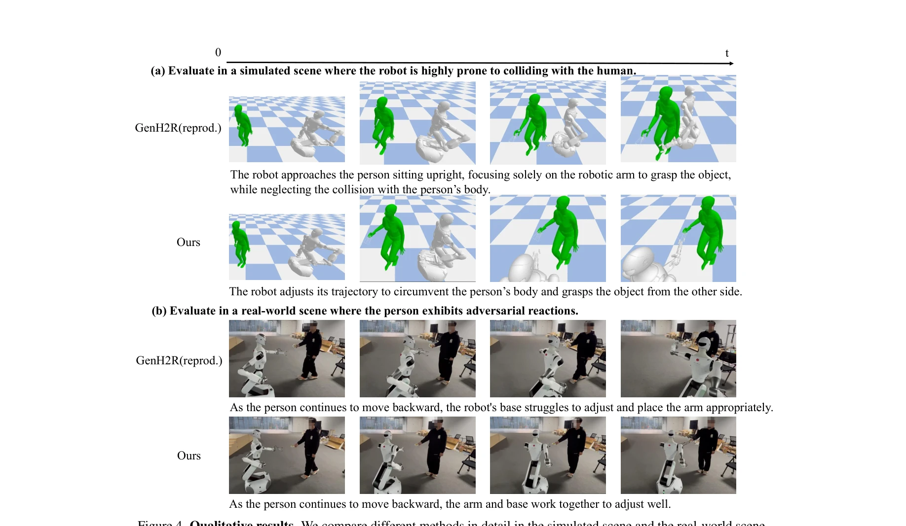
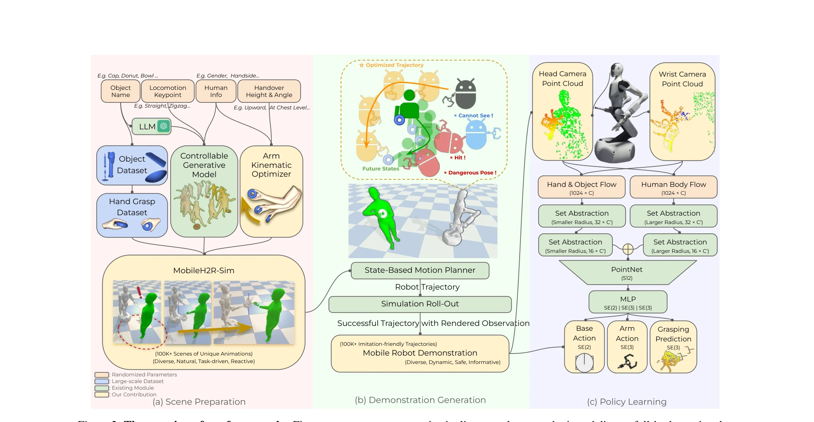

저자: Zifan Wang, Ziqing Chen, Junyu Chen, Jilong Wang, Yuxin Yang, Yunze Liu, Xueyi Liu, He Wang, Li Yi | 날짜: 2025-01-08 | URL: https://arxiv.org/abs/2501.04595

Figure 1. The overview of MobileH2R. We propose a framework for generalizable human-to-mobile-robot handover, including
MobileH2R는 대규모 다양한 합성 데이터만을 사용하여 모바일 로봇이 인간으로부터 물체를 받을 수 있도록 학습하는 프레임워크를 제시한다. 인간의 전신 동작 생성, 안전한 시연 자동 생성, 4D imitation learning을 통합하여 베이스-암 협조 제어가 가능한 일반화된 정책을 학습한다.

Figure 4. Qualitative results. We compare different methods in detail in the simulated scene and the real-world scene.

Figure 2. The overview of our framework. First, we propose an automatic pipeline to scale up synthetic and diverse full-
총평: MobileH2R는 모바일 로봇의 인간-로봇 handover 문제를 체계적으로 해결하는 포괄적이고 확장 가능한 프레임워크를 제시한다. 합성 데이터의 생성, 안전한 시연 자동 생성, 통합 학습이라는 세 요소를 정교하게 설계하여 +15% 이상의 성능 향상을 달성했으며, 대규모 데이터의 효과를 실증한 점에서 실무적 가치가 높다.